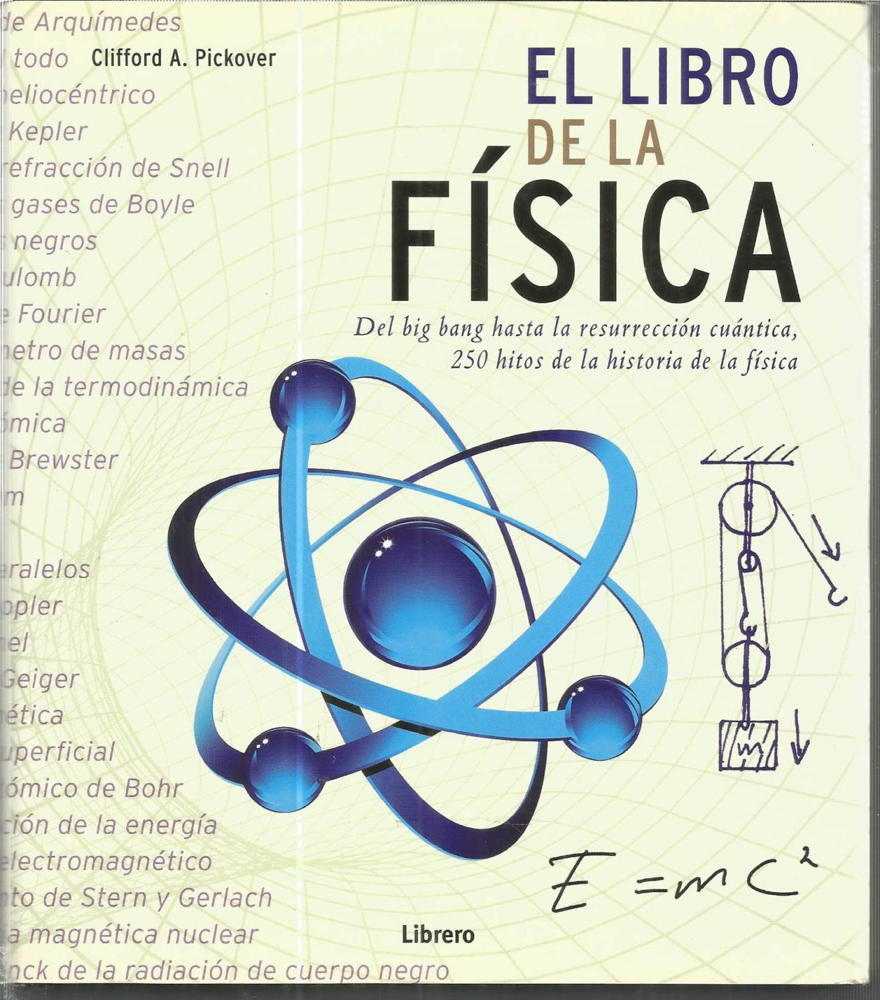

Física
En esta sección presentamos los mejores libros para aprender física desde cero. En esta sección incluiremos los libros que creemos van más allá de un ámbito divulgativo. Son los libros académicos mejor escritos y/o que enseñan de la mejor manera las distintas ramas de la física.
Para aprender física lo primero que se necesita es interés, por supuesto, pero por encima de todo curiosidad. Tanto si necesitas física académica como entender la física, te recomendamos varios libros divulgativos muy bien escritos para ir subiendo en complejidad poco a poco hasta llegar a los grandes autores que todos conocemos.
Los temas cubiertos son los siguientes:
- Mecánica Clásica
- Oscilación y Ondas
- Termodinámica
- Electricidad y Magnetismo
- Luz
- Física Moderna
1. Física para Ciencias e Ingeniería - Serway
Este libro está pensado para un curso introductorio de física para estudiantes que se especializan en ciencia o ingeniería. Todo el contenido del libro en su versión amplia podría cubrirse en un curso de tres semestres, pero es posible usar el material en secuencias más breves con la omisión de capítulos y subtemas seleccionados. Los antecedentes matemáticos ideales de los estudiantes que tomen este curso deben incluir un semestre de cálculo. Si esto no es posible, el estudiante debe inscribirse en un curso simultáneo de introducción al cálculo.
Comprar Libro2. El Libro de la Física - Cliffor Pickover
¿Se puede viajar en el tiempo? ¿Cuándo se asomó por primera vez el ser humano a «la cara oculta de la Luna»? ¿Es posible que de verdad vivamos en Matrix?. Todas las entradas que componen este libro, estructuradas con un criterio cronológico, aportan un resumen sucinto y una o más espectaculares imágenes a todo color, al tiempo que las "Notas y lecturas recomendadas" aportan referencias para profundizar en el estudio de aspectos concretos. Según el propio Pickover, "la física alienta un estado de asombro permanente acerca de los límites del pensamiento, el funcionamiento del universo y nuestro lugar en el inmenso paisaje espacio-temporal que denominamos nuestro hogar".
 Comprar Libro3. Física para la Ciencia y la Tecnología
Durante casi 30 años, la Física para la Ciencia y la Tecnología de Paul A. Tipler ha sido una referencia obligada de los cursos de física universitarios por su impecable claridad y precisión. En esta edición, Tipler y su nuevo coautor Gene Mosca, desarrollan nuevas formas de exponer la física con la intención de no abrumar a los estudiantes sin simplificar en exceso el contenido. Para conveniencia de los profesores y alumnos, la 5a edición de la Física para la Ciencia y la Tecnología está disponible en dos ediciones simultáneas en dos y seis volúmenes, que pueden adquirirse por separado.
Comprar Libro